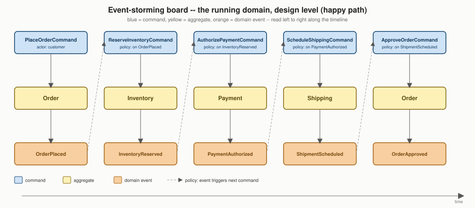

Event Storming
|
This content was generated with the assistance of AI and should be verified against the official documentation before being relied on in production. |
Aggregates closes with a question this page answers directly: given the rules for what belongs inside an aggregate boundary, how does a team actually find the right boundary, rather than guess at one from a static data model? Event Storming, Alberto Brandolini’s workshop format, is the practical answer — a low-tech, high-bandwidth way for domain experts and engineers to walk a real business process together, using nothing more than a long roll of paper (or its remote equivalent) and colored sticky notes, and come out the other side with the events, commands, and aggregates Strategic Design and Aggregates already assume as their starting material. This page has no framework baseline of its own to state, since it is a facilitation technique rather than a programming structure — it exists to produce the running domain model the rest of this section’s Java 21 / Spring Boot 4.1.x code already builds on.
A workshop, not a diagramming notation
Event Storming is run live, in a room (or a shared virtual whiteboard) with the people who actually understand the business process and the people who will build it, standing in front of a wall large enough that nobody has to scroll or paginate to see the whole thing at once. Richardson’s Microservices Patterns 5.3.4 and Vernon’s DDD Destilado ch. 7 both frame it the same way: the value is not the sticky notes themselves, it is the conversation the act of placing them forces — a domain expert who says "and then the order gets approved" prompts an immediate "approved by what, exactly, and what if it isn’t?" from whoever is holding the next sticky note, surfacing disagreements and gaps a written specification would have let slide past unnoticed.
Brandolini describes three levels a session can run at, each answering a different question and each useful at a different point in a project’s life:
-
Big-picture exploration covers an entire business domain or a whole value stream end to end, with a large, cross-functional group, and deliberately tolerates messiness and disagreement — its goal is breadth and shared understanding of the landscape, not a clean model, and it is where bounded-context candidates first become visible as natural clusters of related events.
-
Process-level modeling narrows to one specific business process (placing an order, onboarding a customer) with the people who actually run or will build that process, and starts organizing the events chronologically into a coherent flow, still without committing to implementation detail.
-
Design-level modeling narrows further still, down to the aggregates, commands, and policies inside one bounded context, with enough precision that the board can be read directly into the kind of package layout Structuring the Code describes. This is the level the running domain’s board below is drawn at.
A team new to the technique typically runs these levels in that order across a project’s lifetime — big-picture once, early; process-level per major flow as it is understood; design-level repeatedly, whenever a bounded context’s aggregate boundaries need re-examining — rather than jumping straight to design-level on a domain nobody has mapped yet.
What the room needs, and who is in it
The tooling is deliberately low-tech: a wall (or a shared virtual whiteboard) long enough that the whole flow being modeled fits without scrolling, a roll of paper or a whiteboard surface, and pads of the colored sticky notes the grammar below defines — nothing more elaborate is needed, and Brandolini is explicit that reaching for a heavyweight modeling tool too early gets in the way of the conversation the exercise exists to produce. Three roles matter more than any tool choice:
-
A facilitator keeps the session moving, asks the "what happened next?" and "who decided that?" questions that surface hidden assumptions, and is responsible for noticing when the group has quietly stopped talking about the domain and started arguing about a specific class name — a sign to redirect back to the business process, not the implementation.
-
Domain experts are the people who actually run the process being modeled day to day — an operations lead who approves orders, a warehouse supervisor who manages stock, a support agent who handles disputes — and their presence is what keeps the board describing the real business rather than an engineer’s guess at it.
-
Engineers (and anyone else who will eventually build the system) listen, ask clarifying questions, and place the aggregate notes in the third pass below, since deciding which aggregate owns which command is a design decision they are best placed to make once the domain experts have supplied the vocabulary and the actual sequence of events.
The sticky-note grammar
Every element on the board is a colored sticky note, and the color is the notation — there is no separate legend to consult once a team has run a session or two, because the same palette is reused every time:
| Color | What it represents |
|---|---|
Orange |
A domain event — a past-tense fact, exactly the same shape
Domain Events covers in code ( |
Blue |
A command — an intention that triggers zero or more events ( |
Small yellow/beige figure, or a label |
An actor — who or what issues a command: a customer, an operations user, another system. |
Yellow (large, rectangular) |
An aggregate — the thing that receives a command, decides whether it is valid,
and emits the resulting event(s) ( |
Purple/lilac |
A policy — an automated reaction of the shape "whenever event X happens, issue command Y"; a
policy is what turns a choreography-style saga step
(Sagas) into a sticky note of its own, e.g. "whenever |
Green |
A read model — a view a user or another policy consults before issuing a command, foreshadowing CQRS's query side. |
Pink |
An external system — something outside the bounded contexts under discussion that either triggers a command or reacts to an event (a payment gateway, a shipping carrier’s API). |
Bright red |
A hot spot — an explicitly flagged disagreement, open question, or risk the group could not resolve on the spot ("what happens if the shipping carrier rejects the address?"). A hot spot is deliberately not resolved during the session; it is captured so the conversation can move on without losing the concern. |
The three steps
Design-level modeling, the level this section’s running board is drawn at, proceeds in three passes over the same wall, each pass adding one more color and one more layer of structure on top of what the previous pass already placed — Richardson’s Microservices Patterns 5.3.4 states them in exactly this order:
-
Brainstorm events. Cover the wall in orange notes, in no particular order and with no filtering for redundancy yet —
OrderPlaced,InventoryReserved,PaymentAuthorized,ShipmentScheduled,OrderApproved, and every other past-tense fact anyone in the room can think of for the process under discussion. Duplicates and overlaps get merged once the group can see the whole set at once, not filtered out one at a time as they come up. -
Identify triggers. For each event, ask what caused it, and the answer is always one of four things: a user action issuing a command (a customer places an order), an external system calling in, another event triggering a policy that issues a command in turn (
OrderPlacedtriggering the policy that issuesReserveInventoryCommand), or the passing of time (a scheduled sweep raising a time-based event, exactly the shape Domain Events describes). Each trigger becomes a blue command note (or a purple policy note, for the "another event" case) placed just before the orange event it causes. -
Identify the aggregate. For each command, ask which aggregate receives it, decides whether it is valid, and is the thing that actually emits the resulting event —
PlaceOrderCommandis received byOrder,ReserveInventoryCommandbyInventory, and so on. The yellow aggregate note goes directly beneath the command/event pair it mediates, and this is the step where aggregate boundaries genuinely get discovered rather than assumed: if two commands that intuitively "feel related" turn out to be handled by the same aggregate, or a single command turns out to need two different aggregates to decide it, that tension surfaces here, on the wall, before a single line of code exists to make it expensive to fix.
By the end of the third pass, reading left to right along the timeline the events were arranged in reproduces almost exactly the shape of a use-case walkthrough: command arrives, an aggregate decides, an event results, possibly triggering the next command via a policy.
From the board to bounded contexts, aggregates, and sagas
A design-level board’s structure maps onto this section’s other pages with almost no translation needed. Clusters
of aggregates that exchange events and commands only among themselves, with comparatively few notes crossing to
another cluster, are exactly the seams Strategic Design
draws bounded-context boundaries along — the running domain’s board below clusters into the same four bounded
contexts (Order, Inventory, Payment, Shipping) that page’s context map already names. Every yellow aggregate note
becomes a page-3 aggregate root, sized and bounded by the rules
Aggregates states. A chain of policy notes that fire across
multiple aggregates in sequence — OrderPlaced triggers ReserveInventoryCommand, InventoryReserved triggers
AuthorizePaymentCommand, and so on — is a saga read directly off the wall, choreography-style; deciding to
replace that chain of policies with a single orchestrator is exactly the choreography-vs-orchestration choice
Sagas covers, made after the board already shows which steps exist
and in what order, not before.
The workshop format travels well to a distributed team: the same sticky-note grammar works unchanged on a
shared virtual whiteboard (Miro, FigJam, or a purpose-built Event Storming tool), with the same three passes run
over a video call instead of a physical room. What is harder to preserve remotely is the side-conversation
density a shared physical wall naturally produces — a facilitator running a remote session typically needs to be
more deliberate about explicitly inviting disagreement ("does everyone agree this event happens here?") since
the informal, overheard "wait, that’s not right" that a shared room produces for free does not happen
automatically over a call.
After the workshop, the board is not an artifact to file away — it is the input to the design work this
section’s other pages already cover: hot spots get triaged into follow-up conversations or spikes before design
starts on the aggregates they touch; the aggregate notes feed directly into
Strategic Design's context-mapping exercise and
Aggregates' boundary rules; and the event notes become the actual
DomainEvent types Domain Events shows how to shape, name, and
publish. A board that is photographed once and never revisited has already lost most of its value — the
practical pattern is to re-run the design-level pass whenever a bounded context’s aggregate boundaries are being
reconsidered, using the previous board as the starting point rather than a blank wall.
The running domain’s event-storming board
No code example belongs on this page — Event Storming is a facilitation technique, not a programming structure,
and everything it produces is already expressed as code on the pages linked throughout this one. What belongs
here instead is the running domain’s own board, reproduced as a figure, so a reader can see exactly where the
Order, Inventory, Payment, and Shipping aggregates and their events came from before any of this section’s
other pages had written a line of Java:

Reading the board left to right names exactly the aggregates, commands, and events every other page in this section already uses:
| Aggregate | Command it receives | Event it emits |
|---|---|---|
|
|
|
|
|
|
|
|
|
|
|
|
|
|
|
This is the same Place Order Saga Sagas walks through in full, including its compensation and failure branches — the board above shows only the happy path, since a design-level Event Storming board is typically drawn happy-path-first and then annotated with failure branches and hot spots in a second pass once the main flow is agreed on.